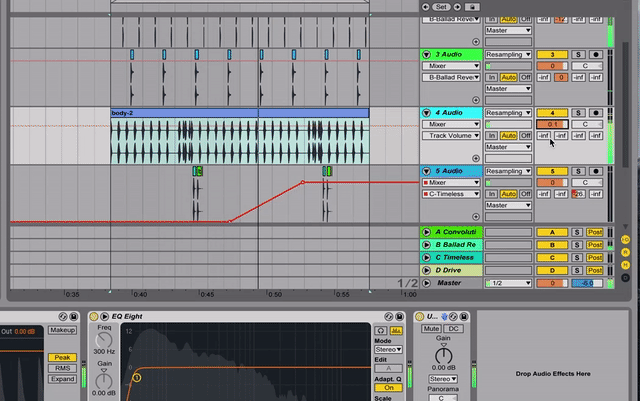

Dream Journal (Sound Design)
While a visual designer works with shapes, colors, and visual hierarchy. A sound designer works with the rhythm, tone, and waves. In many ways, the design processes overlap. I am a full-fledged sound designer. I am an expert level Ableton Live user. I have a degree in Audio Engineering from the University of Washington and have amassed over 100,000 streams across Soundcloud, Spotify, and Apple Music. I am also fully capable of doing video, UI and VR/AR sound design.
Goals: To create music and sounds that evoke powerful physical and emotional responses. To music that can be used as a tool for DJ's and designers to create engaging live environments.
Constraints: Not always know how to create the sounds inside of my head. Needing to learn a huge about of technical information.
Outcomes: Crafting original music and sound design. Performing my music live at Capitol Hill Block Party, Upstream Music Festival, and The Neptune. Learning the skills necessary to effectively design engaging sounds for technology, video, and VR/AR projects.
Sound Design: At the beginning of any sound design project it is important to assemble and create the palette of sounds. These can be recordings, synthesized sounds, the human voice, anything. It is very similar to a pallete of colors and shapes in a visual design project. Pictured is me using a Virtual Studio Tool called Serum to create a synthesized sound using modulated waveforms.

Composition: After the sounds are collected it is time to arrange them into an arrangement. Using a Digital Audio Workstation like Ableton Live, the sounds can be arranged to achieve a goal, whether it is the audio for a video or game, or a song, this is a crucial part of the sound design process. This is similar to creating a UI or visual design in the way you can use human cognitive patterns to create illusions, affect, and experiences.

Performances / Experience: The culmination of a sound design project is to release it into the wild. If it is a song it must be marketed and performed live alongside visual elements and performance art to create an interactive and delightful experience. If it is a sound file to accompany visual art then it needs to be paired with the video or interactive artifact. It is the sound designers job to consider the human experience of interacting with the final product. Sound is almost always overlooked in the development of an experience, though it is a crucial element of any human experience.